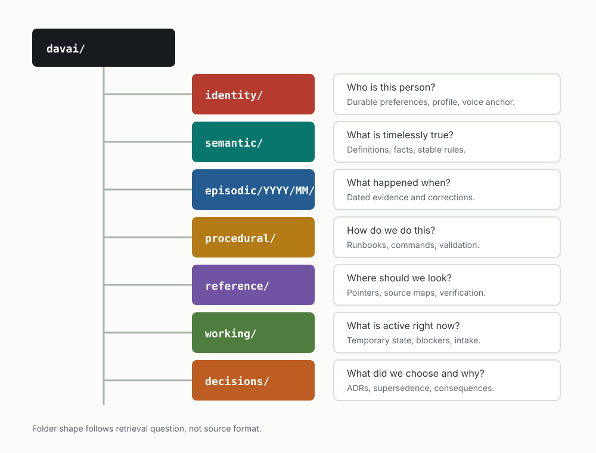
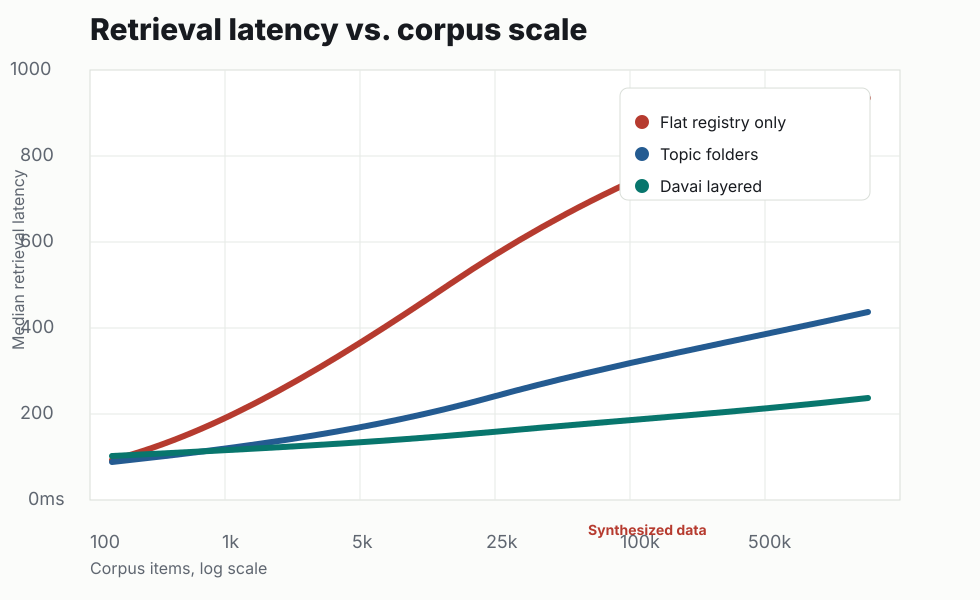
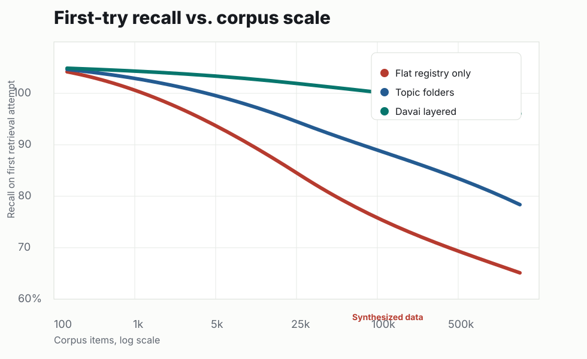
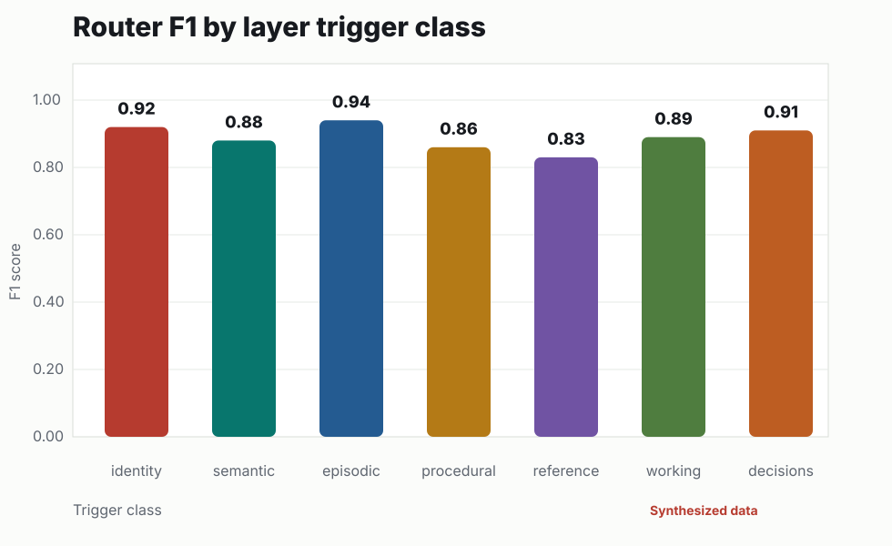

Identity
Who is this person, and what durable preferences shape the response?
identity/
Canonical routing reference
A seven-layer static guide for deciding where memory belongs, how it should change over time, and how operators keep current state separate from evidence and architectural commitments.
Seven layers
Each layer exists because it answers a different retrieval question. Folder shape follows retrieval, not source format.
Who is this person, and what durable preferences shape the response?
identity/
What is true independent of a specific date or workflow?
semantic/
What happened, when, and what evidence proves it?
episodic/YYYY/MM/
How should the system or operator perform this task?
procedural/
Where should someone look for authoritative source material?
reference/
What is active right now and likely to change soon?
working/
What choice was made, why, and what does it supersede?
decisions/
Routing frame
Do not ask where the note came from first. Ask what future retrieval will need: identity, timeless fact, dated evidence, instructions, source location, current state, or architectural commitment.
| Layer | Name | Retrieval question | Path |
|---|---|---|---|
| Layer 1 | Identity | Who is this person, and what durable preferences shape the response? | identity/ |
| Layer 2 | Semantic | What is true independent of a specific date or workflow? | semantic/ |
| Layer 3 | Episodic | What happened, when, and what evidence proves it? | episodic/YYYY/MM/ |
| Layer 4 | Procedural | How should the system or operator perform this task? | procedural/ |
| Layer 5 | Reference | Where should someone look for authoritative source material? | reference/ |
| Layer 6 | Working | What is active right now and likely to change soon? | working/ |
| Layer 7 | Decisions | What choice was made, why, and what does it supersede? | decisions/ |

Publish blockers
These are tracked openly so the site is useful as an implementation reference without pretending the instrumentation is complete.


